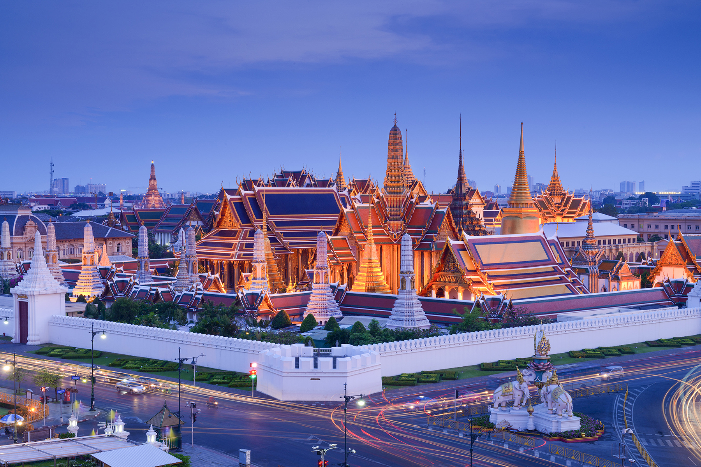
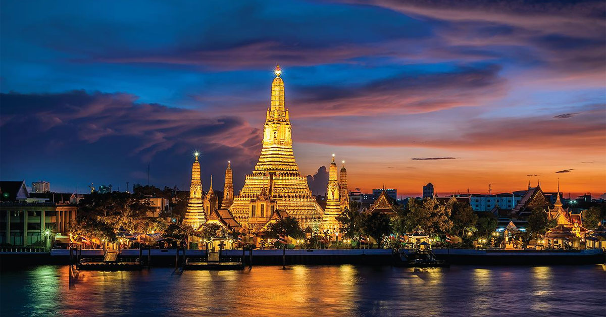

กรุงเทพมหานคร
มหานครแห่งความหลากหลาย ศูนย์กลางทางเศรษฐกิจ วัฒนธรรม และการท่องเที่ยวของประเทศไทย
เริ่มการสำรวจข้อมูลเบื้องต้นเกี่ยวกับกรุงเทพฯ
กรุงเทพมหานคร (Bangkok) เป็นเมืองหลวงและนครที่มีประชากรมากที่สุดของประเทศไทย เป็นศูนย์กลางการปกครอง การศึกษา การคมนาคมขนส่ง การเงินการธนาคาร การพาณิชย์ การสื่อสาร และความเจริญของประเทศ ตั้งอยู่บนสามเหลี่ยมปากแม่น้ำเจ้าพระยา มีแม่น้ำเจ้าพระยาไหลผ่านและแบ่งเมืองออกเป็น 2 ฝั่ง คือ ฝั่งพระนครและฝั่งธนบุรี
ชื่อเต็มของกรุงเทพมหานครได้รับการจดบันทึกในกินเนสส์บุ๊กชิ้นว่าเป็น "ชื่อเมืองที่ยาวที่สุดในโลก" เมืองนี้เต็มไปด้วยการผสมผสานระหว่างสถาปัตยกรรมดั้งเดิมอันวิจิตรตระการตา เช่น พระบรมมหาราชวังและวัดวาอาราม กับตึกระฟ้าและห้างสรรพสินค้าที่ทันสมัยระดับโลก
สถานที่ท่องเที่ยวระดับโลก

วัดพระศรีรัตนศาสดาราม
หรือที่รู้จักในชื่อ "วัดพระแก้ว" เป็นวัดคู่บ้านคู่เมืองของประเทศไทย ประดิษฐานพระพุทธมหามณีรัตนปฏิมากร สถาปัตยกรรมงดงามวิจิตรที่สุดแห่งหนึ่งของโลก
ดูข้อมูลสถานที่ท่องเที่ยว
วัดอรุณราชวราราม
โดดเด่นด้วยพระปรางค์ที่ประดับประดาด้วยกระเบื้องเคลือบสีสันสวยงาม ตั้งอยู่ริมแม่น้ำเจ้าพระยา เป็นจุดชมพระอาทิตย์ตกที่สวยงามที่สุดแห่งหนึ่ง
ดูข้อมูลสถานที่ท่องเที่ยว
สวรรค์แห่ง Street Food
กรุงเทพฯ ได้รับการยกย่องให้เป็นหนึ่งในเมืองที่มีสตรีทฟู้ดที่ดีที่สุดในโลก ไม่ว่าจะเป็น ผัดไทย ต้มยำกุ้ง ส้มตำ หรือข้าวเหนียวมะม่วง ที่เยาวราชและถนนข้าวสาร
ค้นหาร้านเด็ด Michelin